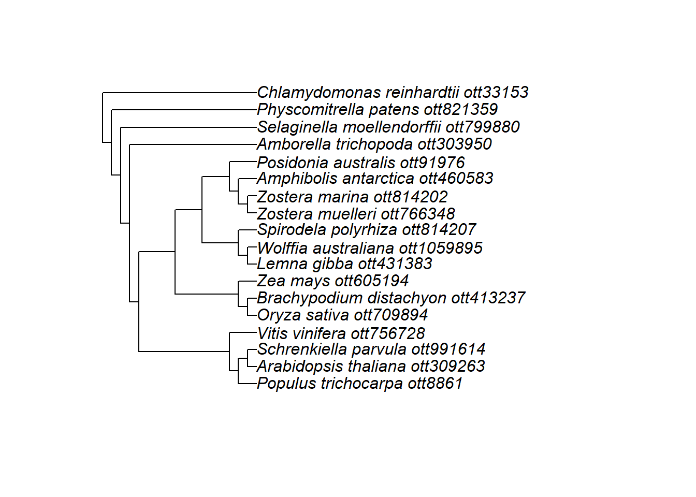
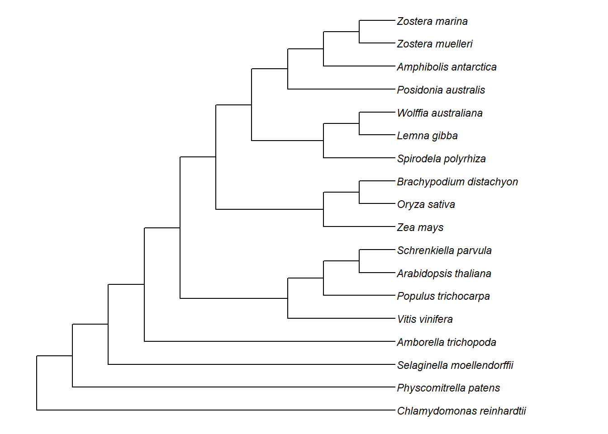
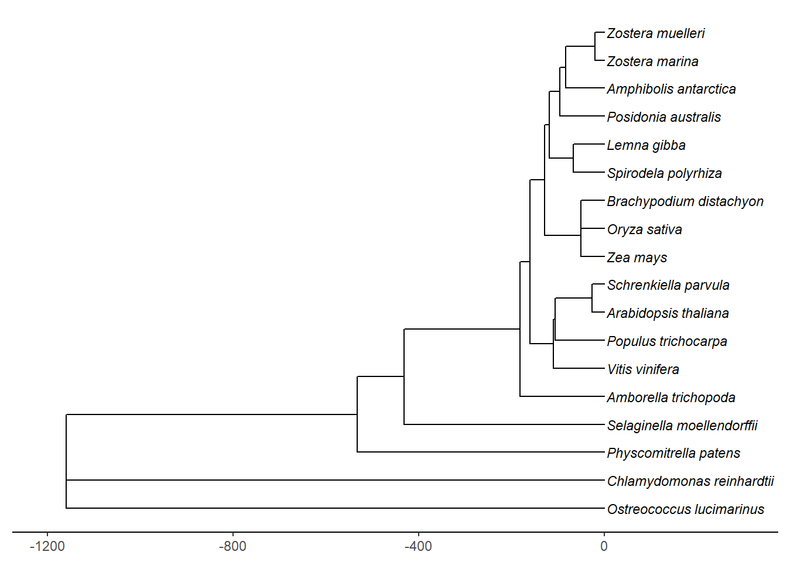

Last updated: 2021-10-07
Checks: 7 0
Knit directory: Amphibolis_Posidonia_Comparison/
This reproducible R Markdown analysis was created with workflowr (version 1.6.2). The Checks tab describes the reproducibility checks that were applied when the results were created. The Past versions tab lists the development history.
Great! Since the R Markdown file has been committed to the Git repository, you know the exact version of the code that produced these results.
Great job! The global environment was empty. Objects defined in the global environment can affect the analysis in your R Markdown file in unknown ways. For reproduciblity it’s best to always run the code in an empty environment.
The command set.seed(20210414) was run prior to running the code in the R Markdown file. Setting a seed ensures that any results that rely on randomness, e.g. subsampling or permutations, are reproducible.
Great job! Recording the operating system, R version, and package versions is critical for reproducibility.
Nice! There were no cached chunks for this analysis, so you can be confident that you successfully produced the results during this run.
Great job! Using relative paths to the files within your workflowr project makes it easier to run your code on other machines.
Great! You are using Git for version control. Tracking code development and connecting the code version to the results is critical for reproducibility.
The results in this page were generated with repository version 08b28ea. See the Past versions tab to see a history of the changes made to the R Markdown and HTML files.
Note that you need to be careful to ensure that all relevant files for the analysis have been committed to Git prior to generating the results (you can use wflow_publish or wflow_git_commit). workflowr only checks the R Markdown file, but you know if there are other scripts or data files that it depends on. Below is the status of the Git repository when the results were generated:
Ignored files:
Ignored: .Rhistory
Ignored: .Rproj.user/
Ignored: analysis/OTT.nb.html
Ignored: analysis/plotGenes.nb.html
Ignored: analysis/plotRgenes.nb.html
Untracked files:
Untracked: Lost_GO_terms_in_five_species.PlantSpecific.xlsx
Untracked: Lost_GO_terms_in_five_species.xlsx
Untracked: data/BACKGROUND.txt
Untracked: data/Lost_GO_terms_in_five_species.PlantSpecific.xlsx
Untracked: data/Lost_GO_terms_in_five_species.xlsx
Untracked: data/R_genes.xlsx
Untracked: data/lost_in_amphi_GO.txt
Untracked: data/lost_in_posi_GO.txt
Untracked: data/lost_in_zmar_GO.txt
Untracked: data/lost_in_zmuel_GO.txt
Untracked: data/missing_amphi_vs_all_GO.txt
Untracked: data/missing_aquatics_GO.txt
Untracked: data/missing_arabidopsis_vs_all_GO.txt
Untracked: data/missing_posi_vs_all_GO.txt
Untracked: data/missing_seagrasses_GO.txt
Untracked: data/missing_zmar_vs_all_GO.txt
Untracked: data/missing_zmuel_vs_all_GO.txt
Untracked: data/only_in_amphi_GO.txt
Untracked: data/only_in_posi_GO.txt
Untracked: data/only_in_zmar_GO.txt
Untracked: data/only_in_zmuel_GO.txt
Untracked: data/only_seagrasses_GO.txt
Untracked: data/shared_lost_genes.xlsx
Untracked: data/species.txt
Untracked: species.csv
Untracked: whatever/
Unstaged changes:
Modified: data/Orthogroups.tsv
Deleted: data/Orthogroups_SpeciesOverlaps.tsv
Modified: data/Species_timetree.svg
Modified: data/species.csv
Note that any generated files, e.g. HTML, png, CSS, etc., are not included in this status report because it is ok for generated content to have uncommitted changes.
These are the previous versions of the repository in which changes were made to the R Markdown (analysis/OTT.Rmd) and HTML (docs/OTT.html) files. If you’ve configured a remote Git repository (see ?wflow_git_remote), click on the hyperlinks in the table below to view the files as they were in that past version.
| File | Version | Author | Date | Message |
|---|---|---|---|---|
| Rmd | 08b28ea | Philipp Bayer | 2021-10-07 | wflow_publish(files = c("analysis/*")) |
| html | 76c8918 | Philipp Bayer | 2021-04-15 | Build site. |
| Rmd | 49dcbb8 | Philipp Bayer | 2021-04-15 | wflow_publish(files = list.files("analysis/", pattern = "*Rmd", |
| Rmd | 9e449bb | Philipp Bayer | 2021-04-14 | Add missing files |
| html | 9e449bb | Philipp Bayer | 2021-04-14 | Add missing files |
| html | 9e91425 | Philipp Bayer | 2021-04-14 | Build site. |
| html | 1d42715 | Philipp Bayer | 2021-04-14 | Build site. |
| Rmd | f3d4014 | Philipp Bayer | 2021-04-14 | wflow_publish("analysis/OTT.Rmd") |
Here I make a subtree from the Open Tree Of Life API for the species we have.
library(rotl)
library(ggtree)ggtree v3.0.4 For help: https://yulab-smu.top/treedata-book/
If you use ggtree in published research, please cite the most appropriate paper(s):
1. Guangchuang Yu. Using ggtree to visualize data on tree-like structures. Current Protocols in Bioinformatics, 2020, 69:e96. doi:10.1002/cpbi.96
2. Guangchuang Yu, Tommy Tsan-Yuk Lam, Huachen Zhu, Yi Guan. Two methods for mapping and visualizing associated data on phylogeny using ggtree. Molecular Biology and Evolution 2018, 35(12):3041-3043. doi:10.1093/molbev/msy194
3. Guangchuang Yu, David Smith, Huachen Zhu, Yi Guan, Tommy Tsan-Yuk Lam. ggtree: an R package for visualization and annotation of phylogenetic trees with their covariates and other associated data. Methods in Ecology and Evolution 2017, 8(1):28-36. doi:10.1111/2041-210X.12628library(cowplot)
library(ggplot2)
library(tidyverse)-- Attaching packages --------------------------------------- tidyverse 1.3.1 --v tibble 3.1.5 v dplyr 1.0.7
v tidyr 1.1.4 v stringr 1.4.0
v readr 2.0.2 v forcats 0.5.1
v purrr 0.3.4 -- Conflicts ------------------------------------------ tidyverse_conflicts() --
x tidyr::expand() masks ggtree::expand()
x dplyr::filter() masks stats::filter()
x dplyr::lag() masks stats::lag()species <- c('Zostera marina', 'Zostera muelleri', 'Arabidopsis thaliana', 'Thellungiella parvula', 'Populus trichocarpa', 'Vitis vinifera', 'Amborella trichopoda', 'Oryza sativa', 'Zea mays', 'Brachypodium distachyon', 'Spirodela polyrhiza', 'Selaginella moellendorffi', 'Physcomitrella patens', 'Chlamydomonoas reinhardtii', 'Ostreococcus lucimarinus', 'Lemna gibba', 'Posidonia australis' ,'Amphibolis antarctica', 'Wolffia australiana')Let’s call the API to get the OTT IDs for these species, and to double-check we got the right names :)
We should get a tree for 19 species.
taxon_search <- tnrs_match_names(names = species, context_name = "All life")knitr::kable(taxon_search)| search_string | unique_name | approximate_match | ott_id | is_synonym | flags | number_matches |
|---|---|---|---|---|---|---|
| zostera marina | Zostera marina | FALSE | 814202 | FALSE | sibling_higher | 1 |
| zostera muelleri | Zostera muelleri | FALSE | 766348 | FALSE | sibling_higher | 1 |
| arabidopsis thaliana | Arabidopsis thaliana | FALSE | 309263 | FALSE | 1 | |
| thellungiella parvula | Schrenkiella parvula | FALSE | 991614 | TRUE | incertae_sedis_inherited | 1 |
| populus trichocarpa | Populus trichocarpa | FALSE | 8861 | FALSE | 2 | |
| vitis vinifera | Vitis vinifera | FALSE | 756728 | FALSE | 2 | |
| amborella trichopoda | Amborella trichopoda | FALSE | 303950 | FALSE | 1 | |
| oryza sativa | Oryza sativa | FALSE | 709894 | FALSE | 1 | |
| zea mays | Zea mays | FALSE | 605194 | FALSE | 1 | |
| brachypodium distachyon | Brachypodium distachyon | FALSE | 413237 | FALSE | 1 | |
| spirodela polyrhiza | Spirodela polyrhiza | FALSE | 814207 | FALSE | 1 | |
| selaginella moellendorffi | Selaginella moellendorffii | TRUE | 799880 | FALSE | 3 | |
| physcomitrella patens | Physcomitrella patens | FALSE | 821359 | FALSE | 1 | |
| chlamydomonoas reinhardtii | Chlamydomonas reinhardtii | TRUE | 33153 | FALSE | 3 | |
| ostreococcus lucimarinus | Ostreococcus sp. ‘lucimarinus’ | FALSE | 851102 | TRUE | incertae_sedis | 1 |
| lemna gibba | Lemna gibba | FALSE | 431383 | FALSE | 1 | |
| posidonia australis | Posidonia australis | FALSE | 91976 | FALSE | 1 | |
| amphibolis antarctica | Amphibolis antarctica | FALSE | 460583 | FALSE | 1 | |
| wolffia australiana | Wolffia australiana | FALSE | 1059895 | FALSE | 1 |
Let’s write the species names out again for timetree.org
cat(capture.output(cat(taxon_search$unique_name, sep='\n'), file="data/species.csv"))That looks good to me!
ott_in_tree <- ott_id(taxon_search)[is_in_tree(ott_id(taxon_search))]tr <- tol_induced_subtree(ott_ids = ott_in_tree)Warning in collapse_single_cpp(ances = tree$edge[, 1], desc = tree$edge[, :
printing of extremely long output is truncatedWarning in collapse_single_cpp(ances = tree$edge[, 1], desc = tree$edge[, :
printing of extremely long output is truncatedWarning in collapse_singles(tr, show_progress): Dropping singleton nodes
with labels: Streptophyta ott916750, mrcaott2ott50189, mrcaott2ott108668,
mrcaott2ott59852, mrcaott2ott8171, mrcaott2ott70394, Euphyllophyta ott1007992,
Spermatophyta ott10218, mrcaott2ott2645, mrcaott2ott35778, Mesangiospermae
ott5298374, mrcaott2ott10930, mrcaott2ott2441, mrcaott2ott969, mrcaott2ott62529,
mrcaott2ott8379, eudicotyledons ott431495, Gunneridae ott853757, Pentapetalae
ott5316182, mrcaott2ott2464, fabids ott565281, mrcaott2ott371, mrcaott2ott1479,
mrcaott2ott345, Malpighiales ott429482, mrcaott345ott3853, mrcaott3853ott8858,
mrcaott8858ott33097, mrcaott8858ott12186, mrcaott8858ott98085, Salicaceae
ott530183, mrcaott8858ott270454, mrcaott8858ott703490, mrcaott8858ott33085,
mrcaott8858ott102531, mrcaott8858ott502530, mrcaott8858ott737360,
mrcaott8858ott474976, Saliceae ott509390, Populus ott530178, mrcaott8858ott8861,
mrcaott8861ott815941, mrcaott8861ott320722, mrcaott8861ott8867, malvids
ott565277, mrcaott96ott14140, mrcaott96ott50744, mrcaott96ott378,
mrcaott378ott29446, mrcaott378ott1697, Brassicales ott8844, mrcaott378ott307071,
mrcaott378ott32461, mrcaott378ott509555, mrcaott378ott318175,
mrcaott378ott9635, mrcaott378ott125843, mrcaott378ott509568, mrcaott378ott28763,
mrcaott378ott83547, Brassicaceae ott309271, mrcaott378ott299734,
mrcaott378ott4671, mrcaott4671ott58909, mrcaott4671ott6278, mrcaott6278ott15318,
mrcaott6278ott158438, mrcaott6278ott10585, mrcaott6278ott34460,
mrcaott6278ott9083, mrcaott9083ott19798, mrcaott19798ott31487,
mrcaott31487ott88883, mrcaott31487ott152275, mrcaott11023ott24850,
mrcaott11023ott56298, mrcaott11023ott95692, mrcaott11023ott25468,
mrcaott11023ott25476, Schrenkiella (genus in kingdom Archaeplastida)
ott5740975, Vitales ott1069308, mrcaott8384ott10050, mrcaott10050ott337881,
mrcaott10050ott194302, mrcaott10050ott302228, mrcaott10050ott24244,
mrcaott24244ott240260, mrcaott24244ott39768, mrcaott39768ott211705,
mrcaott39768ott175159, mrcaott175159ott602495, mrcaott175159ott246514,
mrcaott175159ott903683, mrcaott175159ott568892, mrcaott175159ott235835,
mrcaott175159ott941927, mrcaott175159ott568880, mrcaott175159ott175164,
mrcaott175159ott509603, mrcaott509603ott805071, Liliopsida ott1058517,
Petrosaviidae ott5308424, mrcaott121ott4474, mrcaott121ott1439,
mrcaott121ott334, commelinids ott225270, mrcaott252ott213153, Poales ott921871,
mrcaott252ott128594, mrcaott252ott1477, mrcaott252ott7120, mrcaott252ott285512,
mrcaott252ott3717, mrcaott252ott272812, mrcaott252ott334529,
mrcaott252ott427739, Poaceae ott508090, mrcaott252ott196505, mrcaott252ott43427,
mrcaott252ott751372, mrcaott252ott11561, Oryzoideae ott641467, Oryzeae
ott415723, mrcaott36487ott890607, Oryzinae ott5744622, Oryza ott135764,
mrcaott67120ott709900, mrcaott67120ott272949, mrcaott67120ott709898,
mrcaott67120ott135756, mrcaott135756ott709892, mrcaott135756ott709887,
mrcaott656ott1473, mrcaott1473ott33975, Brachypodieae ott693951, Brachypodium
ott413242, mrcaott1787ott2051, mrcaott1787ott1985, Panicoideae ott641461,
mrcaott6065ott9925, Andropogonodae ott5737327, Andropogoneae ott475213,
Tripsacinae ott5759522, Zea ott605186, Araceae ott481972, mrcaott290ott3983,
Lemna ott1008186, mrcaott338992ott338994, mrcaott338994ott431388,
mrcaott338994ott431383, mrcaott66494ott407568, mrcaott407568ott432842,
mrcaott407568ott1059896, mrcaott407568ott1059895, mrcaott1059895ott1059900,
Spirodela ott431386, mrcaott5202ott159280, mrcaott5202ott30666,
mrcaott30666ott106181, mrcaott30666ott208913, mrcaott30666ott814198,
mrcaott30666ott40117, Zosteraceae ott637476, mrcaott40117ott91951,
mrcaott40117ott197961, mrcaott197961ott817762, mrcaott197961ott529863,
mrcaott197961ott766348, mrcaott766348ott766350, mrcaott436201ott436206,
mrcaott436201ott436203, mrcaott436201ott814202, mrcaott87589ott256106,
mrcaott256106ott460583, mrcaott460583ott514367, mrcaott460583ott613178,
Amphibolis ott460577, mrcaott91974ott351467, Posidoniaceae ott460581, Posidonia
(genus in kingdom Archaeplastida) ott91949, mrcaott91976ott928713, Amborellales
ott927960, Amborellaceae ott295910, Amborella ott303952, Lycopodiopsida
ott144795, mrcaott3661ott18736, Selaginellales ott144821, Selaginellaceae
ott144818, Selaginella ott144816, mrcaott10602ott10604, mrcaott10604ott10608,
mrcaott10604ott78166, mrcaott10604ott10618, mrcaott101177ott144813,
mrcaott532022ott583202, mrcaott532022ott799880, mrcaott541ott1066,
Bryophyta ott246594, mrcaott1066ott204205, Bryophytina ott471195, Bryopsida
ott821346, mrcaott1066ott86152, mrcaott1066ott1769, mrcaott1769ott7813,
mrcaott7813ott148635, mrcaott7813ott86148, mrcaott7813ott454749,
mrcaott7813ott86154, mrcaott7813ott31044, mrcaott31044ott844044,
mrcaott31044ott1060862, Physcomitrella ott821349, Chlorophyta ott979501,
mrcaott185ott42071, mrcaott185ott1426, mrcaott1426ott1544, mrcaott1544ott8659,
mrcaott1544ott15345, mrcaott1544ott9282, mrcaott9389ott818260,
mrcaott9389ott23557, mrcaott23557ott527099plot(tr)
Let’s get rid of those OTT IDs from the tree, I don’t like that. There’s a helper function for that
tr$tip.label <- strip_ott_ids(tr$tip.label, remove_underscores = TRUE)ggtree(tr) +
geom_tree() +
geom_tiplab(size=3,
fontface='italic') +
theme_tree() +
xlim(0, 15)
Cool! I took the above species list and uploaded to timetree (see Species_timetree.svg)
plot(ggdraw()+cowplot::draw_image('./data/species_timetree.svg'))Warning: Package `magick` is required to draw images. Image not drawn.Timetree also lets you export the tree timed with MYA
tree <- read.tree('./data/timetree_species.nwk')tree$tip.label <- str_replace_all(tree$tip.label, '_', ' ')
p <- ggplot(tree) +
geom_tree() +
theme_tree2() +
scale_x_continuous(labels = abs) +
geom_tiplab(size=3, fontface='italic')
revts(p) + xlim(-1200, 300)Scale for 'x' is already present. Adding another scale for 'x', which will
replace the existing scale.
sessionInfo()R version 4.1.1 (2021-08-10)
Platform: x86_64-w64-mingw32/x64 (64-bit)
Running under: Windows 10 x64 (build 17134)
Matrix products: default
locale:
[1] LC_COLLATE=English_Australia.1252 LC_CTYPE=English_Australia.1252
[3] LC_MONETARY=English_Australia.1252 LC_NUMERIC=C
[5] LC_TIME=English_Australia.1252
attached base packages:
[1] stats graphics grDevices utils datasets methods base
other attached packages:
[1] forcats_0.5.1 stringr_1.4.0 dplyr_1.0.7 purrr_0.3.4
[5] readr_2.0.2 tidyr_1.1.4 tibble_3.1.5 tidyverse_1.3.1
[9] ggplot2_3.3.5 cowplot_1.1.1 ggtree_3.0.4 rotl_3.0.11
[13] workflowr_1.6.2
loaded via a namespace (and not attached):
[1] nlme_3.1-152 fs_1.5.0 lubridate_1.7.10 progress_1.2.2
[5] httr_1.4.2 rprojroot_2.0.2 tools_4.1.1 backports_1.2.1
[9] utf8_1.2.2 R6_2.5.1 DBI_1.1.1 lazyeval_0.2.2
[13] colorspace_2.0-2 withr_2.4.2 tidyselect_1.1.1 prettyunits_1.1.1
[17] curl_4.3.2 compiler_4.1.1 git2r_0.28.0 cli_3.0.1
[21] rvest_1.0.1 xml2_1.3.2 labeling_0.4.2 scales_1.1.1
[25] digest_0.6.28 yulab.utils_0.0.2 rmarkdown_2.11 rentrez_1.2.3
[29] pkgconfig_2.0.3 htmltools_0.5.2 dbplyr_2.1.1 fastmap_1.1.0
[33] highr_0.9 rlang_0.4.11 readxl_1.3.1 rstudioapi_0.13
[37] farver_2.1.0 gridGraphics_0.5-1 jquerylib_0.1.4 generics_0.1.0
[41] jsonlite_1.7.2 magrittr_2.0.1 ggplotify_0.1.0 patchwork_1.1.1
[45] Rcpp_1.0.7 munsell_0.5.0 fansi_0.5.0 ape_5.5
[49] lifecycle_1.0.1 stringi_1.7.5 whisker_0.4 yaml_2.2.1
[53] grid_4.1.1 parallel_4.1.1 promises_1.2.0.1 crayon_1.4.1
[57] rncl_0.8.4 lattice_0.20-44 haven_2.4.3 hms_1.1.1
[61] knitr_1.36 pillar_1.6.3 reprex_2.0.1 XML_3.99-0.8
[65] glue_1.4.2 evaluate_0.14 ggfun_0.0.4 modelr_0.1.8
[69] vctrs_0.3.8 treeio_1.16.2 tzdb_0.1.2 httpuv_1.6.3
[73] cellranger_1.1.0 gtable_0.3.0 assertthat_0.2.1 xfun_0.26
[77] broom_0.7.9 tidytree_0.3.5 later_1.3.0 aplot_0.1.1
[81] ellipsis_0.3.2